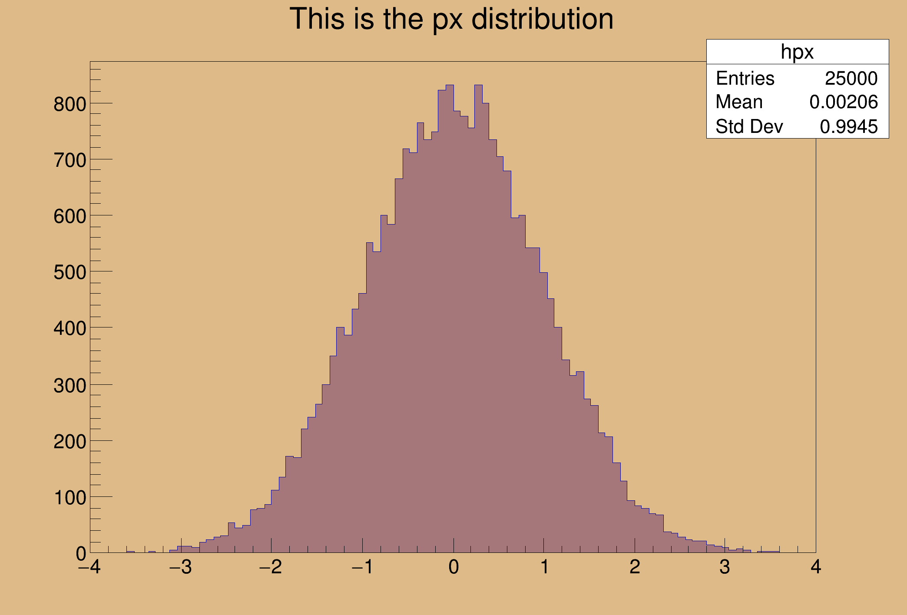

This program creates :
This program creates :
- a one dimensional histogram
- a two dimensional histogram
- a profile histogram
- a memory-resident ntuple
These objects are filled with some random numbers and saved on a file.

from ROOT import TCanvas, TFile, TProfile, TNtuple, TH1F, TH2F
from ROOT import gROOT, gBenchmark, gRandom, gSystem, Double
c1 =
TCanvas(
'c1',
'Dynamic Filling Example', 200, 10, 700, 500 )
c1.SetFillColor( 42 )
c1.GetFrame().SetBorderMode( -1 )
hfile = gROOT.FindObject( 'py-hsimple.root' )
if hfile:
hfile.Close()
hfile =
TFile(
'py-hsimple.root',
'RECREATE',
'Demo ROOT file with histograms' )
hpx =
TH1F(
'hpx',
'This is the px distribution', 100, -4, 4 )
hpxpy =
TH2F(
'hpxpy',
'py vs px', 40, -4, 4, 40, -4, 4 )
hprof =
TProfile(
'hprof',
'Profile of pz versus px', 100, -4, 4, 0, 20 )
ntuple =
TNtuple(
'ntuple',
'Demo ntuple',
'px:py:pz:random:i' )
hpx.SetFillColor( 48 )
gBenchmark.Start( 'hsimple' )
gRandom.SetSeed()
rannor, rndm = gRandom.Rannor, gRandom.Rndm
histos = [ 'hpx', 'hpxpy', 'hprof', 'ntuple' ]
for name in histos:
exec('%sFill = %s.Fill' % (name,name))
kUPDATE = 1000
for i in range( 25000 ):
rannor( px, py )
pz = px*px + py*py
random = rndm(1)
hpx.Fill( px )
hpxpy.Fill( px, py )
hprof.Fill( px, pz )
ntuple.Fill( px, py, pz, random, i )
if i and i%kUPDATE == 0:
if i == kUPDATE:
hpx.Draw()
c1.Modified()
c1.Update()
if gSystem.ProcessEvents():
break
for name in histos:
exec('del %sFill' % name)
del histos
gBenchmark.Show( 'hsimple' )
hpx.SetFillColor( 0 )
hfile.Write()
hpx.SetFillColor( 48 )
c1.Modified()
c1.Update()
- Author
- Wim Lavrijsen
Definition in file hsimple.py.

 ROOT 6.18/03 - Reference Guide Generated on Thu Aug 29 2019 04:10:22 (GVA Time) using Doxygen 1.8.14.
ROOT 6.18/03 - Reference Guide Generated on Thu Aug 29 2019 04:10:22 (GVA Time) using Doxygen 1.8.14.